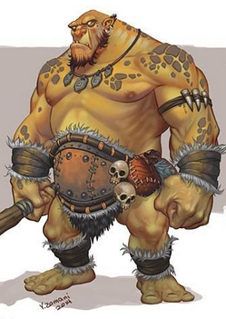

Playable Races > Ogre
Enormous humanoid creatures that boast nigh-unrivaled physical strength, but tend to be dense and remarkably stubborn. Though they tower over most races, their reclusivity and general unwillingness to engage with any intellectual pursuit throttles most civilizational potential.
If motivated for a certain purpose, Ogres quickly reveal themselves to be relentlessly single-minded and persistent, so they make excellent guards and mercenaries. They are usually about 8-9 feet tall.
Goliath: Ogres are immune to being physically stunned from the front.
Racials: +2 STR +2 CON -2 INT -1 CHA -1 AGI
Health: 1d12 health points per level.
Origin: Ogres dwell in rock houses in Redrock, a makeshift town in the far cape of Southern Karra, though many of them infest the desert and canyons all around the continent.